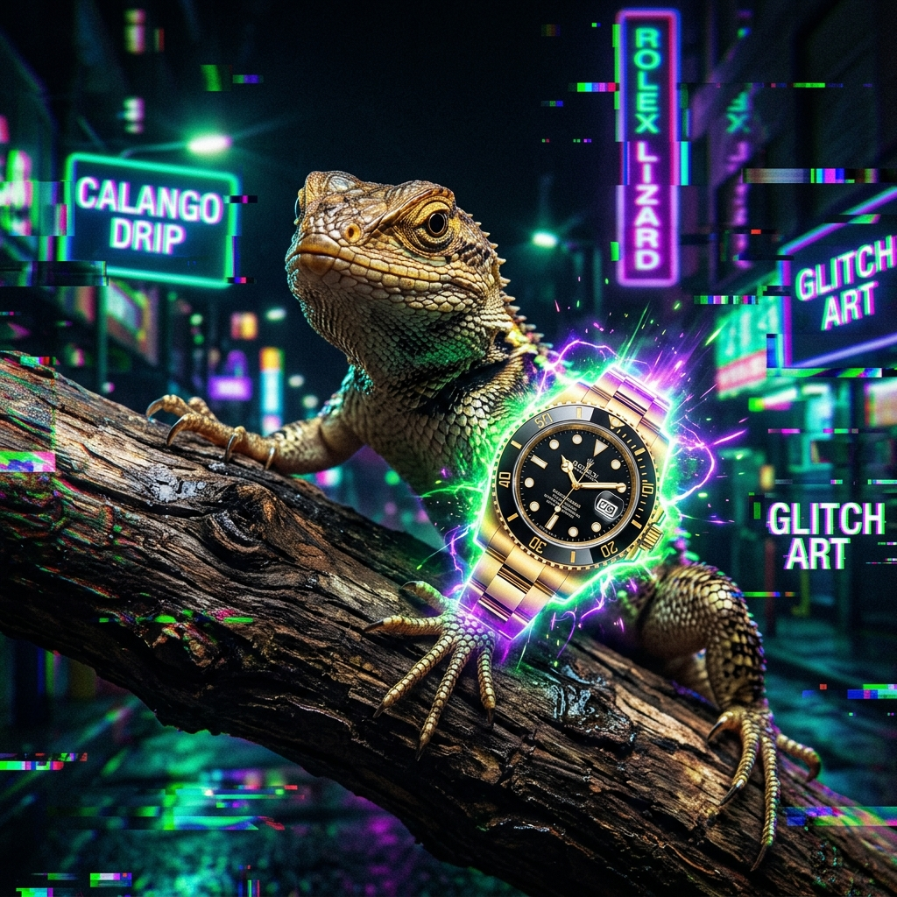
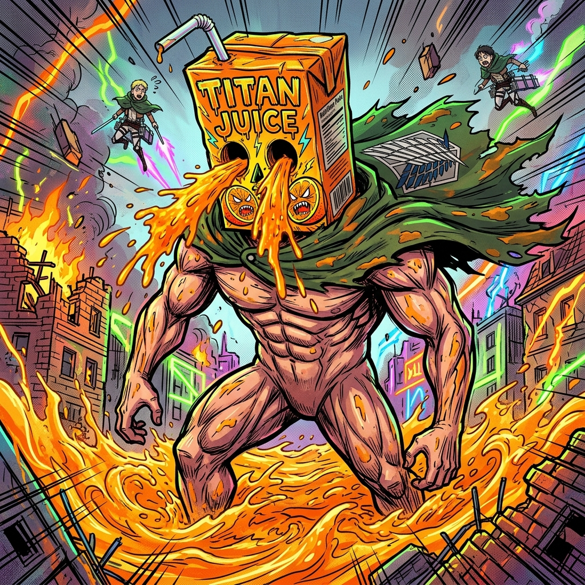

O Rolex Brainrot não é um estado de espírito, é um colapso temporal causado pelo consumo excessivo de suco radioativo e a contemplação do Calango Supremo.
Se você consegue ouvir o tic-tac de um Rolex derretendo no vácuo, você já está 87% calangado.
CALANGO SUCO ATTACK ON TITAN
O Rolex Brainrot não é um estado de espírito, é um colapso temporal causado pelo consumo excessivo de suco radioativo e a contemplação do Calango Supremo.
Se você consegue ouvir o tic-tac de um Rolex derretendo no vácuo, você já está 87% calangado.

"O calango sabe demais, mas ele não tem mãos para digitar."

SHINZOU WO SASAGEYO (PELO SUCO!)
A muralha Maria caiu e foi substituída por uma caixa de suco de 2 litros.
Score: 0